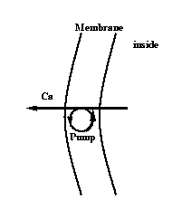

Also want to include that average internal calcium concentration is different from that near the membrane. Ie a bulk compartment and a membrane adjacent compartment. Assume time constant of transfer between membrane adjacent and bulk compartments is tau and width of adjacent membrane compartment is "width"
KINETIC pmp {
~ cabulk <-> cam (1/tau, 1/tau)
~ cam + pump <-> capump (k1, k2)
~ capump <-> cao + pump (k3, k4)
ica_pmp = 2*FARADAY*(f_flux - b_flux)
~ cam << -(ica) : there is a problem here
COMPARTMENT width {cam} : volume has dimensions of (um)
COMPARTMENT 1 {pump capump} : area is dimensionless
COMPARTMENT 1(m) {cao cabulk}
}
But the above scheme needs to be considerably elaborated with regard
to units. Also there is some confusion about whether ica_pmp is counted twice.
The latter is due to the fact that ica contains the current
calculated from the BREAKPOINT blocks of all the contributors
to calcium current and that includes the contribution from THIS model.
The capump.mod file, which is in the course/capump directory, deals with all these issues. Verify that the units are consistent and create a "special" (unix) or "nrnmech.dll" (mswindows).
1) Plot the pump current as a function of internal calcium concentration.
2) Initialize the model to a fairly high internal calcium concentration near the membrane and set tau large so that the change in cai is due solely to pumping. Then plot the internal concentration and pump current as a function of time.
Note that it is non-trivial to set up this initial condition since the default standard run library init() procedure which calls finitialize initializes cai to its steady state with respect to cabulk and the steady state pump current.